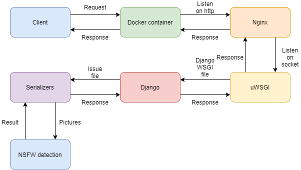

NSFW Detection
Not Safe For Work content detection API
Introduction
- The NSFW Detection is a RESTful API which can identify adult content through a CNN-model
- The NSFW Detection is built with Django
- The NSFW Detection is containerized into Dockerfile and docker-compose, so you can deploy them in any docker-installed instance
Requirements of the project
- Batalk is an online board game platform
- It grew to a larger user population and the user regulation became stricter when the chat function is developed
- App Store requires Batalk to developed a mechanism to filter the NSFW(Not Safe For Work) content
- Therefore, the task is to developed an API which can detect whether the uploaded images to the server is NSFW or SFW(Safe For Work)
Possible solutions
- While there are several popular backend frameworks which are suitable for the project, I still recommended Django as the Backend Framework
- Not only because I am familiar with this framework but also because it provides a very intuitive way to establish an admin backstage for the maintainer to inspect the status
Concept of Implementation
- The NSFW Detection uses the Tensorflow Implementation of Yahoo's Open NSFW Model to act as the detector
- When NSFW Detection receives an API request, it would first be distributed through Nginx
- Then the uwsgi would receive the data from Nginx so Django may be able to process the info
- The Django engine would identify the input type, e.g. url, image or base64 and issue them to relative corresponding serializers
- Serializers would then preprocessing each image and use the detection model to detect the image
- Then the result which contains file_name, user_id, test_score and etc. would be returned
- The NSFW Detection also has an admin backstage which can be access through browser and monitor the status of the detection status
- The NSFW Detection can deal high-concurrency problems using Nginx
- The average response time is 3~4 seconds

My role in the project
- This is the project during my intership in Batalk LTD.
- I am responsible for all of the implementation of the tasks
- The features and functions are requirements from my manager Leo Zhang